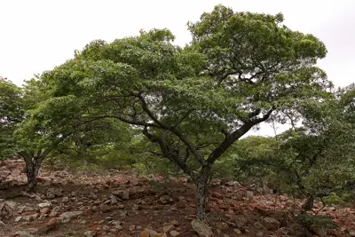

pranet · 出典付きの植物図鑑
Mrihi
Brachystegia spiciformis Benth. · Fabaceae

Brachystegia spiciformis, commonly known as zebrawood, or msasa, is a medium-sized African tree having compound leaves and racemes of small fragrant green flowers. The tree is broad and has a distinctive amber and wine red colour when the young leaves sprout during spring (August–September). It grows in savanna, both open woodland and closed woodland of Southern and Eastern Africa, mostly Tanzania, Zambia, Zimbabwe, Malawi and Mozambique. The word msasa is commonly used as a proper name in African place names. The word also means 'rough plant' in Swahili. Other common names: mundu, myombo, mtondo (Tanzania), muputu (Zambia). The plant is known in the Venda language as mutsiwa, which means 'the one that is left behind'. An outlying population of Brachystegia has recently been discovered in the Soutpansberg mountains of northern South Africa. This tree is a protected species in South Africa.
出典: Wikipedia 英語版「Brachystegia spiciformis」 · CC BY-SA 4.0
異名: Brachystegia appendiculata Benth., Brachystegia bragaei Harms, Brachystegia edulis Hutch. & Burtt Davy, Brachystegia euryphylla Harms, Brachystegia hockii De Wild., Brachystegia itoliensis Taub., Brachystegia mpalensis Micheli, Brachystegia oliveri Taub., Brachystegia randii Baker f., Brachystegia taubertiana Hutch. & Burtt Davy, Brachystegia trijuga R.E.Fr., Brachystegia venosa Hutch. & Burtt Davy
同定や利用は自己責任でお願いします。この図鑑だけを根拠に野生の植物を食べないでください。
出典
- 学名: World Flora Online Plant List 2026-06 · CC0 1.0
- 名前: Wikipedia の記事名と Wikidata · CC0 1.0（Wikidata）。記事名は事実
- 説明: Wikipedia 英語版「Brachystegia spiciformis」 · CC BY-SA 4.0
- 食用・毒性: World Checklist of Useful Plant Species (Diazgranados et al. 2020, RBG Kew) · CC BY 4.0
- 分布: World Checklist of Vascular Plants (WCVP), RBG Kew, version 2026-06-04 · CC BY 3.0
このページは pranet のデータから自動生成しています。コードは MIT、データは項目ごとのライセンス（説明）。